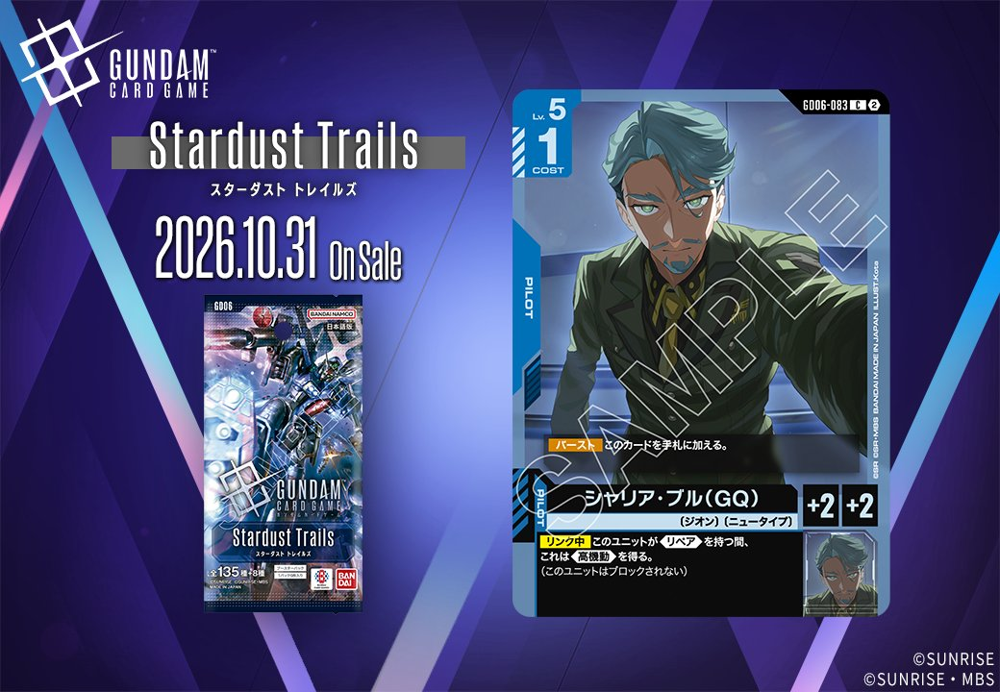
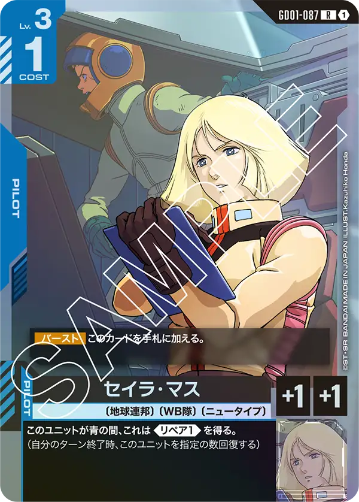

GD06「Phantom Aria」より、青のカード2枚を紹介します。PILOT「シャリア・ブル(GQ)」(GD06-083)と、「アマテ・ユズリハ（マチュ）」「ニャアン」とのリンクを持つUNIT「GQuuuuuuX（オメガ・サイコミュ起動時）」(GD06-006)で、いずれも発売日は2026-10-31です。

シャリア・ブル(GQ) (GD06-083)
| 色 | 青 | タイプ | PILOT |
| Lv | 5 | コスト | 1 |
| 補正 AP | 2 | 補正 HP | 2 |
| 特徴 | 〔ジオン〕、〔ニュータイプ〕 | ||
効果: 【バースト】このカードを手札に加える。【リンク中】このユニットが《リペア》を持つ間、これは《高機動》を得る。(このユニットはブロックされない)
シャリア・ブル(GQ)はCOST1でAP2/HP2のパイロット。【リンク中】このユニットが《リペア》を持つ間、これは《高機動》を得るため、《リペア》付与とセットで運用したいカードです。 同日以降の関連ではセイラ・マス(GD01-087)が青の間《リペア1》を得るため、これらを同一ユニット上でリンクさせれば《リペア》起点で《高機動》を常駐させ、シールドエリアアタック時に相手のブロッカー発動を無効化できます。パプテマス・シロッコ(GD03-084)の【リンク時】《リペア2》付与も条件成立の手段になります。 2026-10-31発売。低コストながら《高機動》成立の前提を他カードに依存する点は運用時の注意点です。

GQuuuuuuX（オメガ・サイコミュ起動時） (GD06-006)
| 色 | 青 | タイプ | UNIT |
| Lv | 5 | コスト | 3 |
| AP | 4 | HP | 2 |
| 特徴 | 〔アルファ殺し〕 | ||
| リンク条件 | 「アマテ・ユズリハ（マチュ）」/「ニャアン」 | ||
効果: 【配備時】このユニット以外の〔アルファ殺し〕の味方のユニットがいるなら、HP3以下の相手のユニット1つを選んでもよい。それを持ち主の手札に戻す。
COST3でAP4/HP2、【配備時】に自身以外の〔アルファ殺し〕の味方ユニットがいれば、HP3以下の相手ユニット1つを手札に戻せる青のLv.5ユニット。バウンス効果はブロッカー持ちの一時的な除去にも使えるが、味方に〔アルファ殺し〕を並べる前提条件があり、単体では発動できない点に注意したい。 リンク先は「アマテ・ユズリハ（マチュ）」「ニャアン」で、2026-10-31発売のGD06収録。HP2と守りは薄いため、配備タイミングを見極めて手札に戻す対象を選びたい。


関連カード
-
 アムロ・レイ(ST01-010)青系デッキ内採用率53% (2664デッキ)
アムロ・レイ(ST01-010)青系デッキ内採用率53% (2664デッキ) -
 バナージ・リンクス(GD01-088)青系デッキ内採用率3.5% (174デッキ)
バナージ・リンクス(GD01-088)青系デッキ内採用率3.5% (174デッキ) -
 ウッソ・エヴィン(GD04-081)青系デッキ内採用率3.4% (169デッキ)
ウッソ・エヴィン(GD04-081)青系デッキ内採用率3.4% (169デッキ) -
 パプテマス・シロッコ(GD03-084)青系デッキ内採用率3.1% (154デッキ)
パプテマス・シロッコ(GD03-084)青系デッキ内採用率3.1% (154デッキ) -

セイラ・マス(GD01-087)青系デッキ内採用率0% (1デッキ) -
 ガンダム(ST01-001)青系デッキ内採用率51.4% (2583デッキ)
ガンダム(ST01-001)青系デッキ内採用率51.4% (2583デッキ) -
 覚悟の表れ(GD01-100)青系デッキ内採用率50.6% (2544デッキ)
覚悟の表れ(GD01-100)青系デッキ内採用率50.6% (2544デッキ) -
 コルシカ基地(ST02-016)青系デッキ内採用率37.3% (1873デッキ)
コルシカ基地(ST02-016)青系デッキ内採用率37.3% (1873デッキ) -
 ガンタンク(GD01-008)青系デッキ内採用率37% (1860デッキ)
ガンタンク(GD01-008)青系デッキ内採用率37% (1860デッキ) -
 アマテ・ユズリハ（マチュ）(ST06-009)赤系デッキ内採用率0.6% (28デッキ)
アマテ・ユズリハ（マチュ）(ST06-009)赤系デッキ内採用率0.6% (28デッキ)